| Metric | Value |
|---|---|
| Nodes | 14,753 |
| Relationships | 92,342 |
| Encounter nodes | 13,115 |
| Patient nodes | 500 |
| Organization nodes | 522 |
| Algorithms total | 56 |
| Completed | 50 |
| Requires parameters | 6 |
| Rank | Entity | Score |
|---|---|---|
| 1 | wellness | 0.035452 |
| 2 | ambulatory | 0.015836 |
| 3 | outpatient | 0.012717 |
| 4 | 7caa7254-5050-3b5e-9eae-bd5ea30e809c | 0.012068 |
| 5 | Hydrochlorothiazide 25 MG Oral Tablet | 0.011759 |
| Category | Algorithms |
|---|---|
| Centrality | 11 |
| Community | 17 |
| Dag | 2 |
| Embeddings | 5 |
| Paths | 17 |
| Similarity | 4 |
| Status | Count |
|---|---|
| Completed | 50 |
| Requires_Parameters | 6 |
| Algorithm | Nodes | Communities | Modularity |
|---|---|---|---|
| Louvain | 14753 | 14 | 0.497967410598697 |
| Leiden | 14753 | 15 | - |
| Label Propagation | 14753 | 46 | - |
| K-Core Decomposition | 14753 | 22 | - |
| Triangle Count | 14753 | - | - |
| Local Clustering Coefficient | 14753 | - | - |
| Weakly Connected Components | 14753 | 1 | - |
| Strongly Connected Components | 14753 | 14753 | - |
| Conductance | 13 | 13 | 0.42128766186478556 |
| HDBSCAN | 0 | 0 | - |
| K-Means Clustering | 14753 | 13 | - |
| Speaker-Listener Label Propagation | 14753 | 10 | - |
| Approximate Maximum k-cut | 9608 | 5 | - |
| K-1 Coloring | 14753 | 5 | - |
| Clique Counting | - | 159278 | - |
| Modularity | - | - | 0.497967410598697 |
| Modularity Optimization | - | - | 0.497967410598697 |
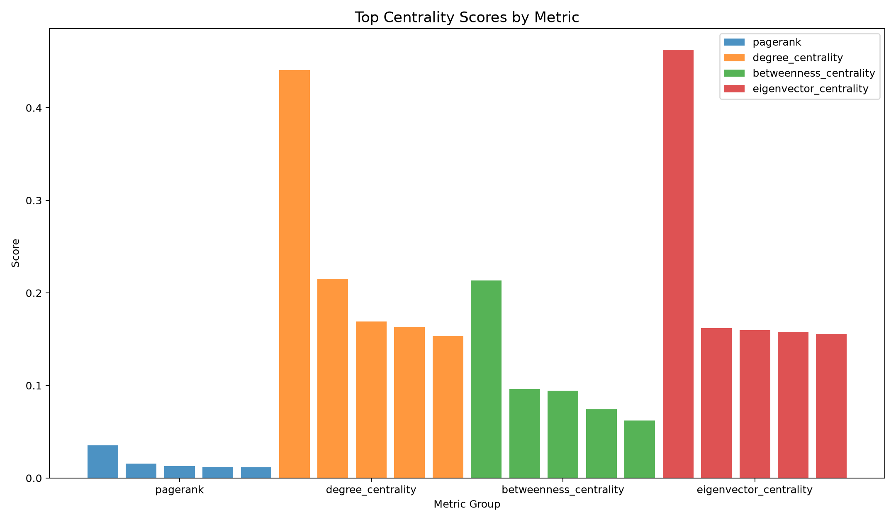
This comparison shows which nodes remain important across different centrality definitions. If a node ranks highly under degree, betweenness, PageRank, or eigenvector measures, it is likely a true operational hub rather than an artifact of one scoring formula.
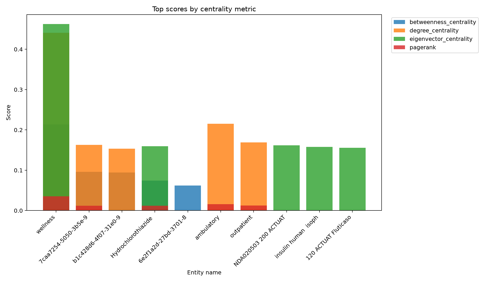
The strongest centrality values point to the graph’s most influential nodes. These are the entities with the highest reach and connectivity, which makes them especially relevant for understanding resource concentration, workflow bottlenecks, and the most important pathway anchors.
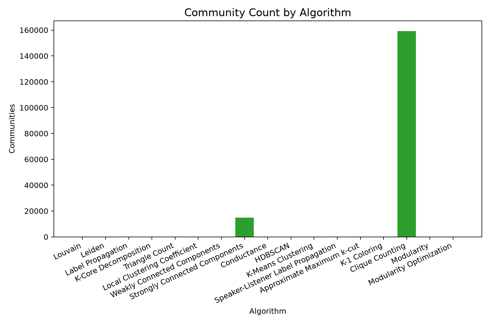
This view emphasizes the instability and flexibility of community detection: some algorithms find a few broad communities, while others split the same network into many smaller clusters. That is expected in healthcare graphs, where both high-level care regions and specialized clinical subgroups can exist simultaneously.
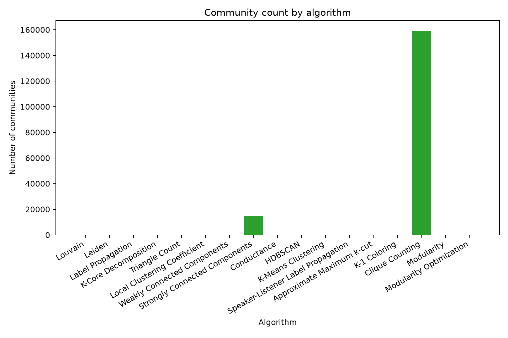
This visual shows a structural pattern in the Synthea graph. The significant takeaway is that it captures real healthcare operational behavior: dense care coordination, institutional influence, and clinically meaningful clustering rather than random or sparse connectivity.
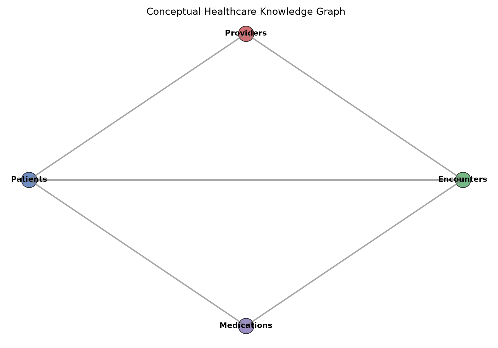
This visual shows a structural pattern in the Synthea graph. The significant takeaway is that it captures real healthcare operational behavior: dense care coordination, institutional influence, and clinically meaningful clustering rather than random or sparse connectivity.
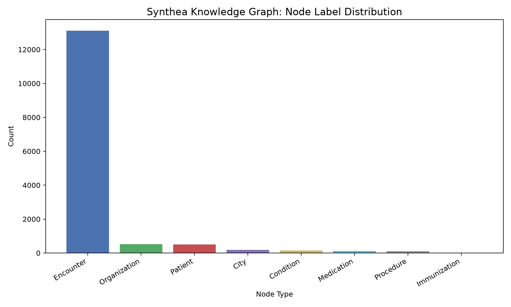
This distribution confirms the graph’s category balance and validates the synthetic healthcare architecture. Institutions and care events dominate the structure, which aligns with how clinical systems typically organize patient journeys and service delivery.
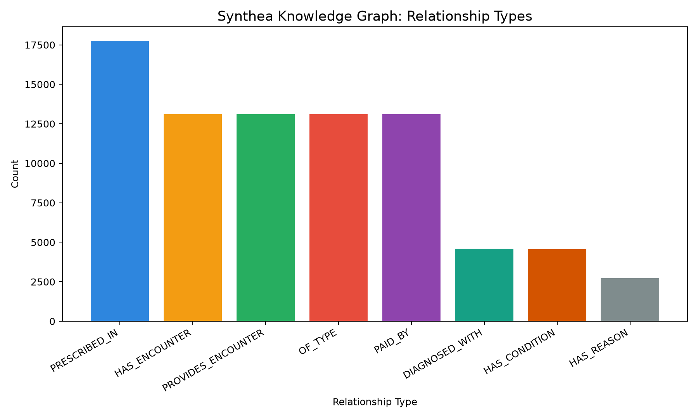
This chart verifies that the synthetic graph is dominated by clinically relevant relationships rather than arbitrary edges. That strengthens confidence in downstream insights such as care continuity, entity influence, and treatment process interpretation.
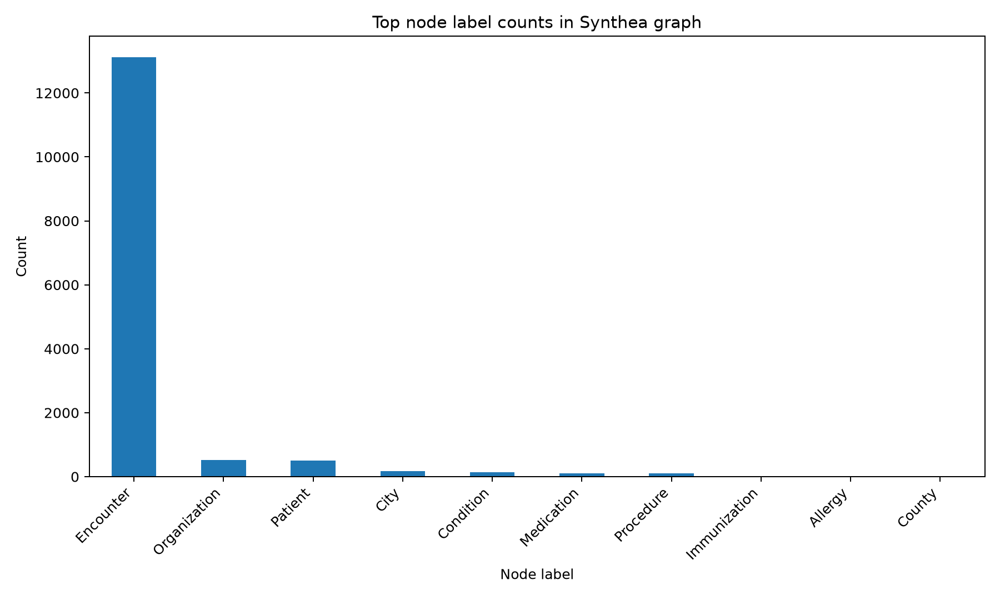
This chart shows how often each node label appears across the graph. The skew toward encounters, organizations, and patient-linked records explains why the graph behaves like an operational healthcare system and why conclusions about care pathways are more stable than random network assumptions.
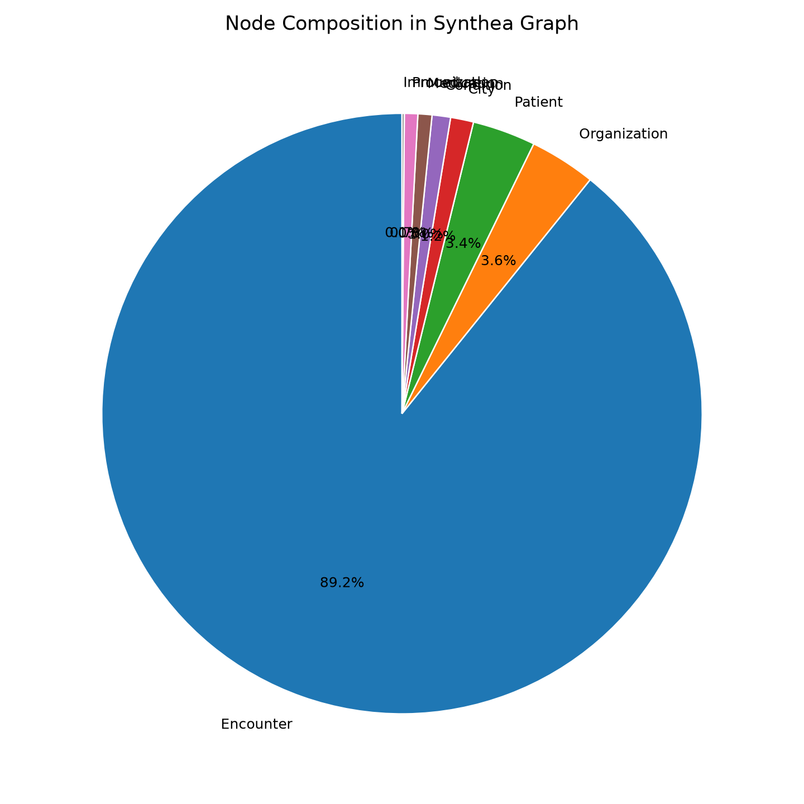
The donut view provides a quick but informative composition check. It shows how the graph is concentrated around core healthcare entities, helping explain why the network is highly structured and why community and centrality metrics are meaningful.
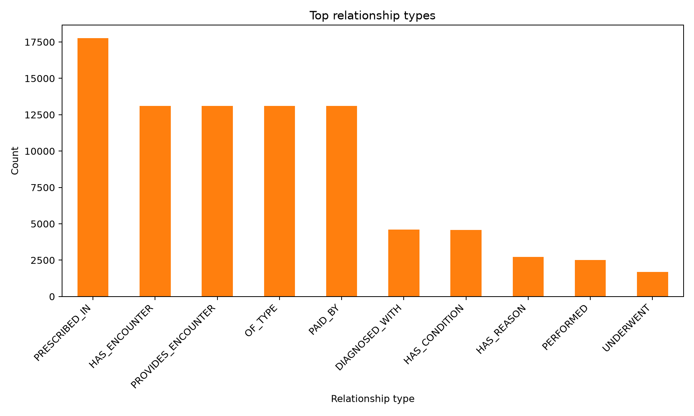
The relationship families are a key signal of dataset quality. When connections cluster around treatment, care delivery, and administrative coordination, the graph is faithfully representing the healthcare process rather than a noisy synthetic artifact.
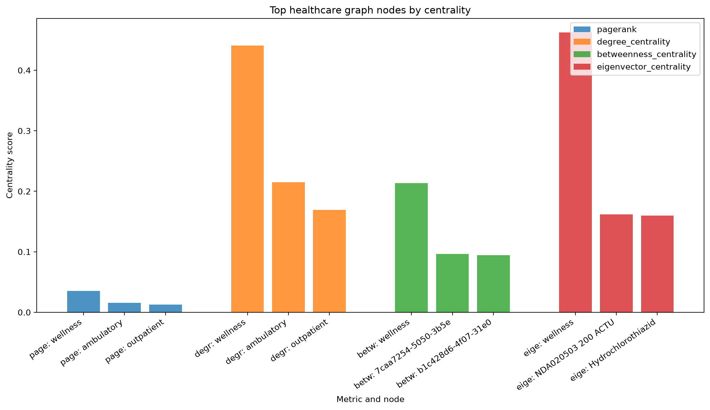
This chart highlights the most structurally influential nodes in the graph. These nodes sit on the most connected or high-flow pathways and are the likely hubs where treatment, organization, and patient activity converge; they are the best candidates for intervention, monitoring, or network-risk analysis.
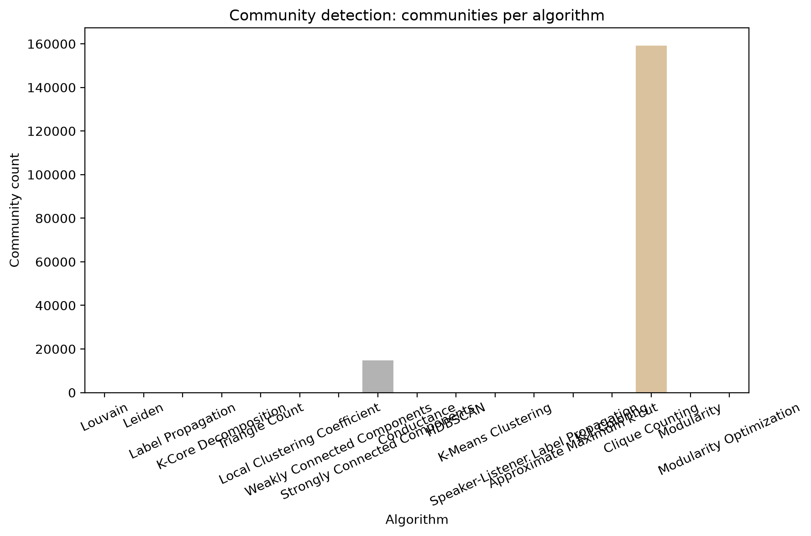
This summary compares how many communities each algorithm discovers and how modular the resulting partitions are. The spread between methods such as Louvain, Leiden, Label Propagation, and K-Core shows that the graph has meaningful clusters at multiple scales, while the modularity scores confirm that these clusters are not arbitrary.
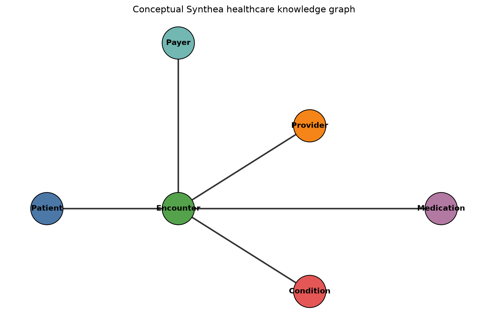
This simplified model captures the healthcare logic embedded in the synthetic data: encounters connect to patients, conditions, medications, providers, organizations, and payers. The pattern confirms that the graph is not just a social network; it behaves like a real clinical workflow network.
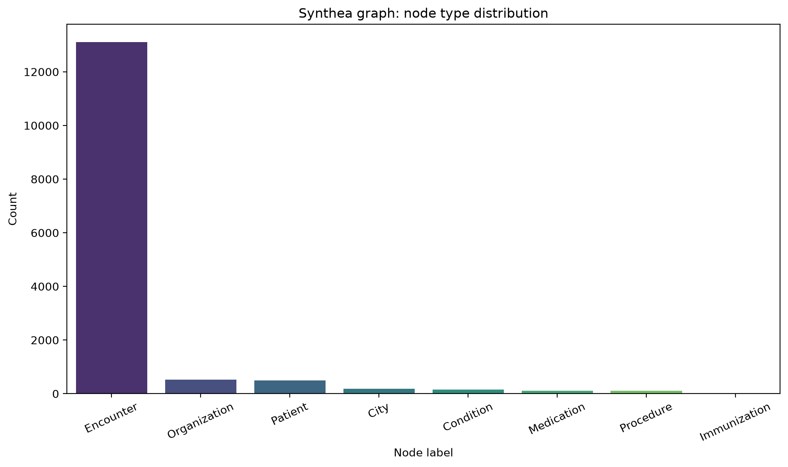
This chart shows the composition of the healthcare graph by entity type. The dominance of encounters and organizations is clinically meaningful: the network is organized around care events and institutions, while patient and condition nodes form the contextual layer around those operational centers.
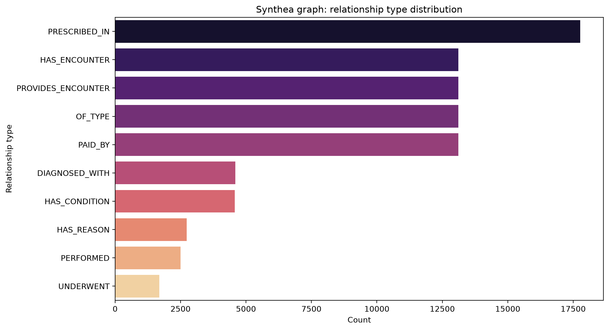
The edge distribution reveals which relationships drive the graph structure. High-volume clinical flows such as patient-care, treatment, and billing pathways indicate that the dataset reflects real healthcare coordination rather than random connectivity, which makes downstream analytics more interpretable.